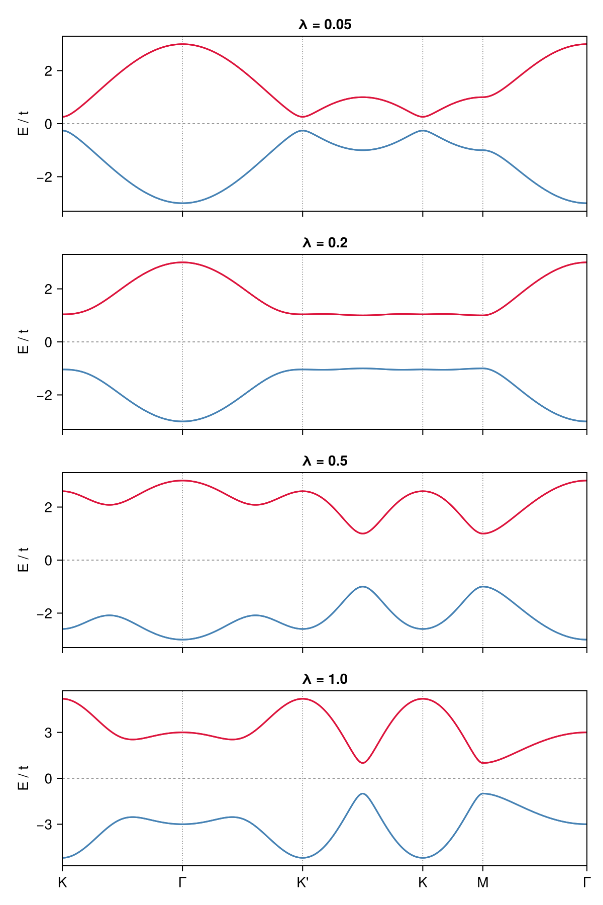
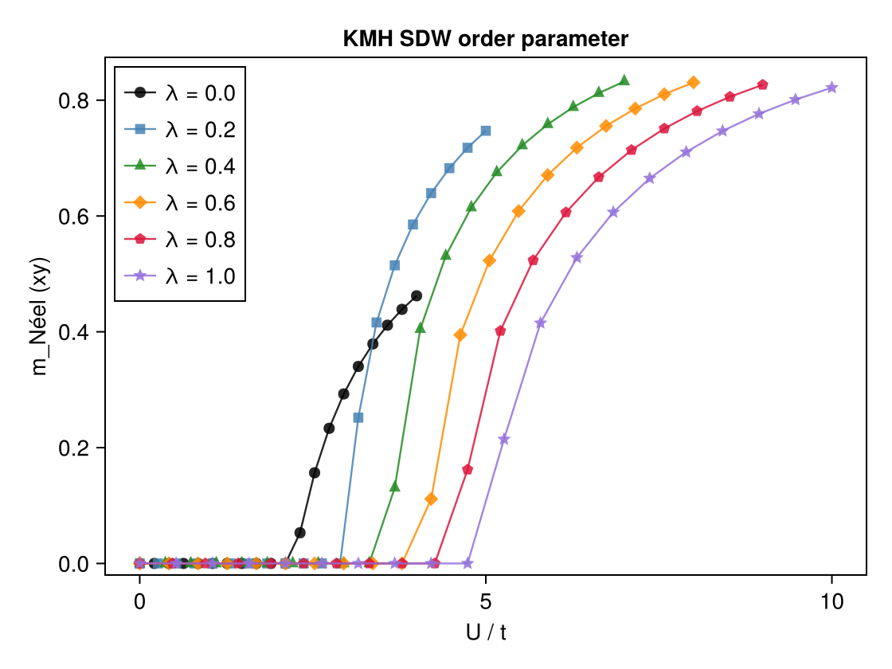
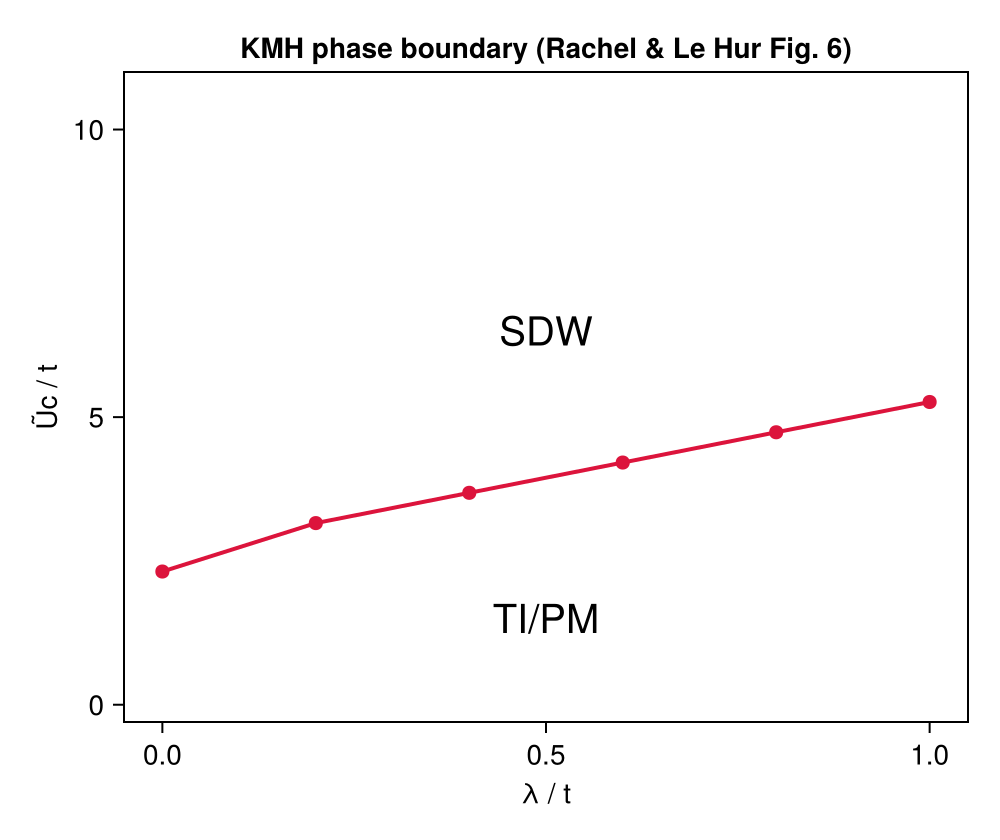

Example: Kane-Mele-Hubbard Model — SDW Phase Boundary
This example reproduces Figs. 5 and 6 of Ref. [1]: the non-interacting Kane-Mele band structure and the spin-density-wave (SDW) phase boundary $U_c$ vs $\lambda$ of the Kane-Mele-Hubbard (KMH) model on the honeycomb lattice at half-filling.
Physical Model
\[H = -t \sum_{\langle ij \rangle,\sigma} (c^\dagger_{i\sigma}c_{j\sigma} + \text{h.c.}) + i\lambda \sum_{\langle\langle ij \rangle\rangle,\sigma\sigma'} \nu_{ij} \sigma^z_{\sigma\sigma'} c^\dagger_{i\sigma}c_{j\sigma'} + \text{h.c.} + U \sum_i n_{i\uparrow}n_{i\downarrow}\]
\[t\]
: nearest-neighbor (NN) hopping (set to 1)\[\lambda\]
: next-nearest-neighbor (NNN) spin-orbit coupling (Kane-Mele SOC)\[U\]
: on-site Coulomb repulsion\[\nu_{ij} = +1\]
($-1$) if the NNN hop from $j$ to $i$ turns counterclockwise (clockwise)
The NNN SOC term can be written compactly as $\lambda \exp(i\sigma\nu_{ij}\pi/2)$, where $\sigma = \pm 1$ for spin up/down. At $\lambda = 0$ the model reduces to the honeycomb Hubbard model with AFM transition at $U_c \approx 2.2t$. A finite $\lambda$ breaks time-reversal symmetry and drives the system into a topological insulator (TI) phase at small $U$, which is pushed into the SDW phase at large $U$. The HF SDW order develops in the $xy$-plane (transverse to the $z$-axis of the SOC), with the Néel vector lying in the $xy$-plane.
The order parameter is
\[m^\text{Néel}_{xy} = \sqrt{(m^x_A - m^x_B)^2 + (m^y_A - m^y_B)^2}\]
where $m^{x,y}_s = \text{Re/Im}\langle c^\dagger_{s\uparrow} c_{s\downarrow} \rangle$ is read from the off-diagonal (spin-flip) block of the local Green's function.
Method
The calculation uses momentum-space unrestricted Hartree-Fock (solve_hfk) on a $100 \times 100$ $k$-grid (10000 $k$-points). For each $\lambda$, the interaction $U$ is swept from high to low with a warm-start strategy:
- First point (largest $U$): 5 random symmetry-breaking restarts with
field_strength=1.0to find the SDW ordered state. - Subsequent points: warm-start from the converged Green's function of the previous $U$ with a single restart, following the order parameter continuously down to zero.
This high-to-low scan is more efficient than scanning low-to-high because the ordered state at large $U$ is easier to find and provides a good initial guess for smaller $U$.
Critical detail: symmetric Hubbard interaction
The xy-plane SDW order requires the Hartree-Fock effective Hamiltonian to support spin-flip off-diagonal elements. This is only possible if the interaction tensor $V_{\sigma_1\sigma_2\sigma_3\sigma_4}$ is fully Hermitian. The standard shorthand (1,1,2,2) == U defines only $V_{\uparrow\uparrow\downarrow\downarrow} = U$ and misses $V_{\downarrow\downarrow\uparrow\uparrow} = U$, breaking Hermiticity and making the xy-SDW inaccessible. The correct symmetric form is:
(qn1.spin == qn2.spin) && (qn3.spin == qn4.spin) && (qn1.spin !== qn3.spin) ? U/2 : 0.0which gives both terms with total weight $U$.
Code
using MeanFieldTheories, LinearAlgebra, Printf
# Lattice: honeycomb with a1=[0,√3], a2=[3/2,√3/2], A at (0,0), B at (1,0)
const a1 = [0.0, √3]; const a2 = [3/2, √3/2]
unitcell = Lattice(
[Dof(:cell, 1), Dof(:sub, 2, [:A, :B])],
[QN(cell=1, sub=1), QN(cell=1, sub=2)],
[[0.0, 0.0], [1.0, 0.0]];
vectors=[a1, a2])
dofs = SystemDofs([Dof(:cell, 1), Dof(:sub, 2, [:A, :B]), Dof(:spin, 2, [:up, :dn])])
nn_bonds = bonds(unitcell, (:p, :p), 1)
nnn_bonds = bonds(unitcell, (:p, :p), 2)
onsite_bonds = bonds(unitcell, (:p, :p), 0)
# One-body: NN hopping + NNN Kane-Mele SOC
function build_onebody(λ)
onebody_nn = generate_onebody(dofs, nn_bonds,
(delta, qn1, qn2) -> qn1.spin == qn2.spin ? -1.0 : 0.0)
onebody_nnn = generate_onebody(dofs, nnn_bonds,
(delta, qn1, qn2) -> begin
qn1.spin !== qn2.spin && return 0.0im
sigma = (qn1.spin == 1) ? 1.0 : -1.0
# ν = ±1 determined from bond direction and sublattice (A or B)
nu = ... # see run.jl for full ν assignment
return λ * exp(im * sigma * nu * π/2)
end)
return (ops = [onebody_nn.ops; onebody_nnn.ops],
delta = [onebody_nn.delta; onebody_nnn.delta],
irvec = [onebody_nn.irvec; onebody_nnn.irvec])
end
# Two-body: symmetric Hubbard interaction (required for xy-SDW)
function build_U_ops(U)
generate_twobody(dofs, onsite_bonds,
(deltas, qn1, qn2, qn3, qn4) ->
(qn1.spin == qn2.spin) && (qn3.spin == qn4.spin) && (qn1.spin !== qn3.spin) ? U/2 : 0.0,
order=(cdag, :i, c, :i, cdag, :i, c, :i))
end
kpoints = build_kpoints([a1, a2], (100, 100))
n_elec = 2 * length(kpoints) # half-filling
# xy-plane Néel order parameter from spin-flip off-diagonal of G_loc
function sdw_order_parameter(G_k)
G_loc = dropdims(sum(G_k, dims=3), dims=3) ./ Nk
Sx_A = real(G_loc[iAup, iAdn]); Sy_A = imag(G_loc[iAup, iAdn])
Sx_B = real(G_loc[iBup, iBdn]); Sy_B = imag(G_loc[iBup, iBdn])
return sqrt((Sx_A - Sx_B)^2 + (Sy_A - Sy_B)^2)
end
# High → low U scan with warm-start
for λ in λ_vals
onebody = build_onebody(λ)
prev_G = nothing
for (i, U) in enumerate(reverse(collect(U_ranges[λ])))
twobody = build_U_ops(U)
r = solve_hfk(dofs, onebody, twobody, kpoints, n_elec;
G_init = prev_G,
n_restarts = i==1 ? 5 : 1,
field_strength = i==1 ? 1.0 : 0.0,
n_warmup = i==1 ? 15 : 0,
tol = 1e-10,
verbose = false)
prev_G = r.G_k
mxy = sdw_order_parameter(r.G_k)
end
endRunning the Example
# Step 1: run HF solver and save results
julia --project=examples -t 8 examples/KMH/run.jl
# Step 2: read data files and generate figures
julia --project=examples examples/KMH/plot.jlrun.jl will:
- Compute the non-interacting Kane-Mele band structure for $\lambda \in \{0.05, 0.2, 0.5, 1.0\}$ along $K \to \Gamma \to K' \to K \to M \to \Gamma$ and save to
bands.dat - For each $\lambda \in \{0, 0.2, 0.4, 0.6, 0.8, 1.0\}$, sweep $U$ from high to low (20 points) using the warm-start strategy above
- Save results (including $m^\text{Néel}_{xy}$ and full local magnetization) to
res.dat
plot.jl will read the data files and generate figures in docs/src/fig/:
km_bands.png: non-interacting Kane-Mele band structure (Fig. 5)kmh_order_parameter.png: $m^\text{Néel}_{xy}$ vs $U$ for each $\lambda$kmh_phase_diagram.png: SDW phase boundary $U_c$ vs $\lambda$ (Fig. 6)
Results
Non-Interacting Band Structure (Fig. 5)

The Kane-Mele SOC opens a topological gap at the Dirac points. The gap grows with $\lambda$, and the bands acquire a Chern structure that supports helical edge states.
SDW Order Parameter vs $U$

For each $\lambda$, the xy-plane Néel order parameter $m^\text{Néel}_{xy}$ jumps from zero to a finite value at the critical coupling $U_c(\lambda)$. Larger $\lambda$ requires larger $U$ to stabilize the SDW phase, reflecting the protection of the topological insulator by the SOC gap.
SDW Phase Boundary (Fig. 6)

The phase boundary $U_c(\lambda)$ rises monotonically from $U_c(0) \approx 2.2t$ (pure honeycomb Hubbard) to $U_c(1.0) \approx 7t$. The region below the curve is the TI/PM phase and above it is the SDW phase, in agreement with Fig. 6 of Ref. [1].
References
[1] S. Rachel and K. Le Hur, Topological insulators and Mott physics from the Hubbard interaction, Phys. Rev. B 82, 075106 (2010).